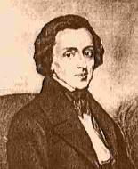

|  | Frédéric Chopin (1810-1849) Catalogue des oeuvres |
| Biographie | Oeuvre | Index alphabétique | Références | Liens |
| Catalogues | Oeuvres avec numéros d'opus |
| Index alphabétiques | Musique instrumentale |
| Musique vocale |
Il est possible d'entendre des extraits d'oeuvre
(fichiers MIDI) en cliquant sur l'image suivante:  |
| Références |
|
| Liens |
|